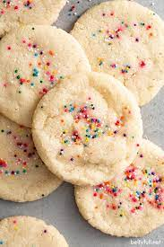

cookie dough

Description
I love this recipe because it only requires four ingredients! When I feel like eating a
unhealthy snack I can always make this, and while not recommended you can eat it raw as plain cookie dough. I hope
you enjoy this recipe.
Ingredients
- unsalted butter
- granulated sugar
- flour
Steps
Make the dough: beat together butter, sugar, and flour until blended.
Form the cookies: form the dough into 1-inch balls. Roll the balls in sugar, then flatten them with a glass or measuring cup.
Bake: bake until just barely golden around the edges and bottom.
Rest: let rest and cool for at least 10-15 minutes before eating.
I used
bellyfull.net
. I copied a lot from this recipe so click
here to see the original recipe.
To see other recipes click here!